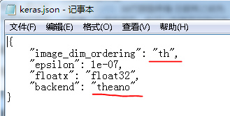
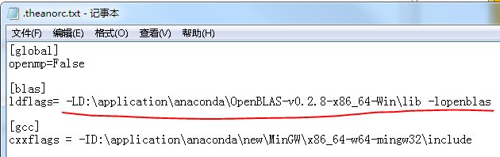

我使用的是windows系统，安装的Anaconda，使用里面的Ipython notebook，已经默认安装了numpy, 使用theano为后端，在ipython notebook中安装theano和keras都很简单。
!pip install theano
!pip install keras但是，使用keras时发现两个小问题：
keras官方文档见https://keras.io/backend/ ，你可以在你的用户目录下找到.keras文件，如C:.keras，该文件需要修改两个地方，如下图所示：

官方文档中仅提示，修改”backend”，还要修改”image_dim_ordering”，不然卷积层的输出参数总是不对。
首先，去下载一个openblas，https://sourceforge.net/projects/openblas/files/
然后，把openblas的libopenblas.dll所在的文件夹加入到系统环境变量Path里。 如，我的在D:-v0.2.8-x86_64-Win，就把这个路径添加到环境变量中。
最后，在配置文件.theanorc.txt里配置下，该配置文件在C:，如果没有，就新建一个，如下所示：

可以使用keras构建深度学习模型了！
2017年4月重装keras记录
主要遇到两个问题： + import theano 后，警告没有安装g++。 按照提示的安装一个软件后，import theano，直接报错，泪啊
在重复安装、尝试、卸载，纠结了几天，要放弃了，终于看到了一个靠谱的文章，http://blog.csdn.net/qq_30490125/article/details/49704159 ，才知道估计我上次下载的anaconda老版本，自带MinGw， 即自动安装了g++。anaconda中也是自带blas加速的，因为numpy是依赖blas的，不过有时blas会没安装成功，numpy仍然可以安装，就是没用blas加速。
import numpy
id(numpy.dot) == id(numpy.core.multiarray.dot)如果返回false，恭喜你，已经安装了blas，如果是true，没安装blas，用的是python的实现，没有加速。
简单处理：重装。
我使用最新版的Anaconda2-4.3.1-Windows-x86_64安装，验证失败，我又下了个老版的Anaconda-2.2.0-Windows-x86_64安装，验证成功。
听说anaconda 2.之前的版本是内置了mingw的（如果anaconda安装目录下有MinGW的目录）。
我这里没内置，还是要装，我按照上面博客介绍的安装的，前几次也安装过，总是失败，这次上天眷顾，运气回升，安装成功，不过看着后面的一堆设置path，我也是醉了，一会设置系统变量中的path，一会设置用户变量中的path，以前的种种失败，估计就是因为以前看到的资料中没说清楚，我随便选一个设置的，还是上面博客中说的清楚啊，下面复制上面博客的，备份下。
好多网上的教程都说自己去下载，然后手动安装。这个我不想谈（都是泪）
安装方法：
2.1 打开CMD（注意是windows命令提示符，并不是进入到python环境下，否则会提示语法错误，因为conda命令就是在windows下面执行的。）；
2.2 输入conda install mingw libpython，然后回车，会出现安装进度，稍等片刻即可安装完毕。此时就有C:。
2.3 然后你只需要在你的系统环境变量里面的path中加入 C:;C:_64-w64-mingw32。 可在windows命令行中输入g++ -v来查看是否安装成功：
3.1 编辑用户变量中的path变量，在后边追加C:;C:; 不要漏掉分号，此处需要根据自己的安装目录填写。
3.2 在系统变量中新建变量PYTHONPATH，变量值为C:-packages; ，此处就是指明安装的theano的目录是哪，这里的theano我们会在后面安装，正常安装的默认路径就是这个。 3.3 打开cmd，会看到窗口里边有个路径，我的是C:>，根据自己的路径，找到对应的目录，在该目录下新建一个文本文档.theanorc.txt （注意有两个“.”），编辑它，写入以下内容： > [global]
openmp=False
[blas]
ldflags=
[gcc]
cxxflags=-I*C:
其中斜体字部分是你安装的Anaconda的路径，一定不要弄错。否则找不到MinGw。
据说是要重启一下的，然而我懒，所以并没有。
不需要手动下载zip等压缩包，直接用命令安装最简单。
4.1 打开CMD，方法和安装MinGw一样，不要进入python。
4.2 输入pip install theano，回车后就是赏心悦目的下载进度条，这个很小，所以安装的比较快。
4.3 在cmd中，输入python 进入到python环境下，然后先输入import theano回车，需要等一段时间。
然后什么也没有输出，没有报错。
接下来不需要theano.test(),因为没有配置cuda，所以肯定会报错。
不过这个时候，你可以去这个网址http://deeplearning.net/software/theano/tutorial/adding.html 如果到这里你都没有问题的话，这里的第一个小程序是肯定能跑起来的。
备份完毕。
建议详细参考原博文 http://blog.csdn.net/qq_30490125/article/details/49704159
原博文还有gpu的设置，我没有gpu啊，等有了再参考。
十分感谢原博文的博主！
参考：
备注：转移自新浪博客，截至2021年11月，原阅读数1393，评论0个。